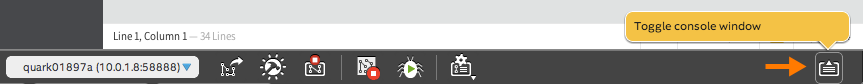

Upload and run the application
Upload the project files to the IoT device and run it. Remember that every time you make changes to files and you want to see the changes: (1) save the file, (2) upload, (3) run.

- In the bottom toolbar, click the “Upload” icon to upload the current project to the device.
- Check the console log for a message confirming the upload.
- In the bottom toolbar, click the “Run” icon to run the project that is currently installed on the device.
- Keep an eye on the console log bar for any runtime errors.

Click the “Toggle console window” icon if you see any messages and the console is not already expanded.
Get a “cannot find module mraa” message?
If you see this error message, your board is missing libmraa, a library for GPIO communication on Linux platforms. Connect to your IoT board via serial or SSH. Then run the following commands:
echo "src mraa-upm http://iotdk.intel.com/repos/1.1/intelgalactic" > /etc/opkg/mraa-upm.conf
opkg update
opkg install libmraa0
The first command will edit the mraa-upm config file on the board. The last two commands use the board’s built-in Opkg package manager to download and update the missing library.
After updating the MRAA libraries, return to the Intel® XDK. Click the “Run” icon again to re-run the project on the device.